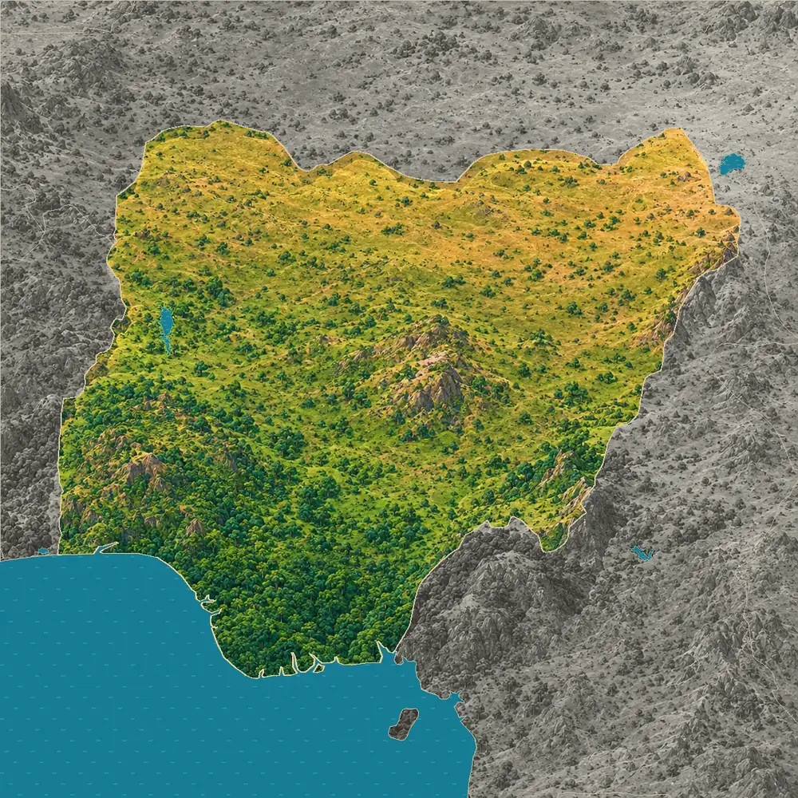
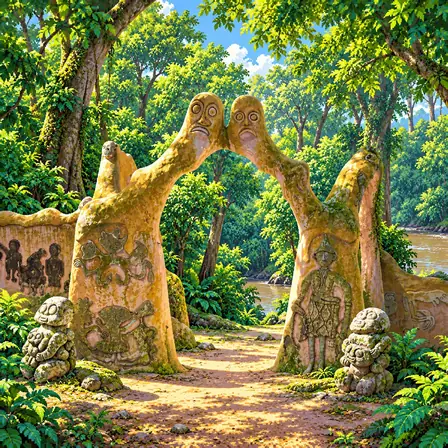
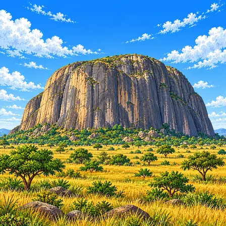
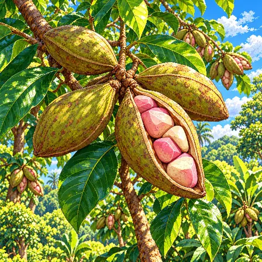
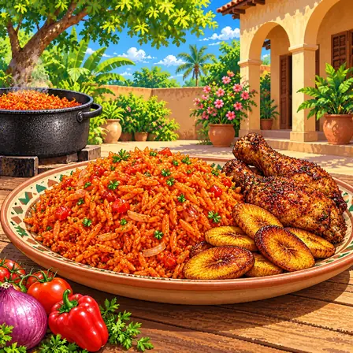
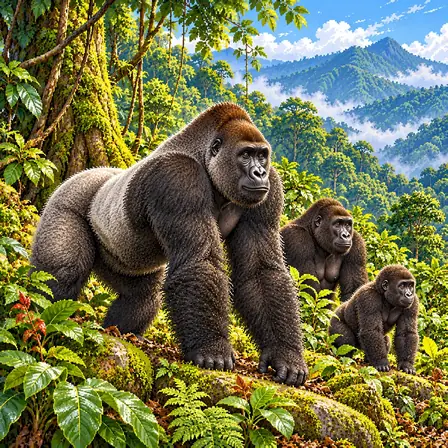

북쪽 사바나에서 남쪽 숲으로
바닷가를 따라 폭 50~250km의 띠에는 맹그로브와 늪 숲, 열대우림이 자라요. 북쪽으로 갈수록 비가 줄고 건기가 길어져, 숲은 나무가 드문드문 선 사바나로 바뀌고 북쪽 끝은 한 해 비가 250~500mm인 메마른 땅이 돼요.

나이지리아는 북쪽이 넓은 사바나이고, 남쪽으로 갈수록 숲이 짙어져요. 남쪽 바닷가에는 큰 강이 흙을 쌓아 만든 니제르 삼각주가 있어요. 한가운데에는 높고 평평한 조스 고원이 솟아 있어요.
나이지리아는 북쪽의 건조한 사바나에서 남쪽의 열대 숲과 니제르 삼각주의 늪지로 풍경이 바뀌어요. 한가운데에 조스 고원이, 동쪽 카메룬과의 경계를 따라 산지가 솟아 있어요.
바닷가를 따라 폭 50~250km의 띠에는 맹그로브와 늪 숲, 열대우림이 자라요. 북쪽으로 갈수록 비가 줄고 건기가 길어져, 숲은 나무가 드문드문 선 사바나로 바뀌고 북쪽 끝은 한 해 비가 250~500mm인 메마른 땅이 돼요.
나라 한가운데의 조스 고원은 둘레의 평원보다 높이 솟은 높고 평평한 땅이에요. 고원 곳곳에는 둥근 고리 모양으로 솟은 화강암 산들이 모여 있어요.
니제르강이 바다로 들어가는 남쪽 해안에는 강이 실어 온 흙이 쌓여 생긴 니제르 삼각주가 있어요. 넓이는 약 7만km²로 아프리카에서 가장 큰 삼각주이고, 서아프리카와 중앙아프리카에서 가장 넓은 민물 늪 숲이 있어요.
서쪽의 카인지 호수는 1968년 니제르강에 댐을 세워 만든 호수예요. 물이 가장 많을 때 넓이가 약 1,270km²이고, 건기에는 물이 빠져 호수가 꽤 줄어들어요.
조스 고원의 고리 모양 화강암은 약 2억 년 전부터 1억 4천만 년 전 사이 땅속에서 올라온 마그마가 굳어 생겼어요. 마그마가 둥근 틈을 따라 올라와 굳은 뒤 둘레의 무른 바위가 깎여 나가, 고리 모양 산이 드러났어요.
출처: Universidad de Salamanca (Studia Geologica Salmanticensis), The Younger Granite ring complexes of Nigeria · Federal University of Agriculture, Abeokuta, Evaluation of NigeriaSat-1 image for geological mapping of part of Plateau State
북동쪽 카메룬과의 경계를 따라 만다라산맥이 약 190km 이어져요. 옛 화산 활동으로 생긴 산맥으로, 높은 곳은 해발 1,100m가 넘어요.
나이지리아에서 잘 알려진 도시, 역사유산, 자연, 식물, 문화, 음식, 동물, 인사말, 국기를 한 장씩 그렸어요.
아부자는 나이지리아의 수도예요. 나라 한가운데에 새로 계획해서 지은 도시예요. 초록색 둥근 지붕을 얹은 국회의사당이 있어요.
아부자는 나이지리아 한가운데에 새로 계획해 지은 나이지리아의 수도예요. 여러 민족과 종교가 함께 사는 나라에서 어느 쪽에도 치우치지 않은 한가운데 땅을 골라, 1970년대 말부터 도시를 짓기 시작했어요. 1991년 12월 12일 바닷가 도시 라고스에서 이곳으로 수도를 옮겼어요. 도시 북쪽의 거대한 바위 '아소 록' 아래에 대통령 집무실과 대법원, 초록색 둥근 지붕을 얹은 국회의사당이 모여 있어요. 넓은 도로와 공원, 건물들이 미리 짜 둔 계획에 따라 놓여 있어요.

오순-오소그보 신성한 숲은 강을 따라 펼쳐진 오래된 숲이에요. 숲속 곳곳에 크고 신기한 조각이 서 있어요. 해마다 강가에서 큰 축제가 열려요.
오순-오소그보 신성한 숲은 나이지리아 남서부 오소그보 시 가장자리에서 오순강을 따라 펼쳐진 약 75ha의 숲이에요. 요루바 사람들은 예로부터 마을 둘레에 신성한 숲을 두어 지켜 왔는데, 이곳은 그런 숲 가운데 마지막으로 남은 큰 숲이에요. 숲속에는 강의 여신 오순을 모시는 신전과 제단이 있고, 20세기 중반부터 오스트리아 출신 예술가 수잔 벵어와 지역 예술가들이 시멘트와 흙, 쇠로 만든 크고 독특한 조각이 곳곳에 서 있어요. 해마다 8월이면 오순 축제가 열려 많은 사람이 강가로 모여요. 2005년 유네스코 세계유산에 등재됐어요.

주마 바위는 평평한 땅 위에 홀로 솟은 거대한 바위예요. 둘레 땅이 깎여 나가고 단단한 바위만 남았어요. 나이지리아 지폐에도 그려져 있어요.
주마 바위는 아부자 서쪽 니제르주의 평평한 땅 위에 홀로 우뚝 솟은 거대한 바위예요. 아주 오래전 땅속 깊은 곳에서 마그마가 식어 굳은 단단한 바위(반려암과 화강섬록암)가, 둘레의 무른 땅이 오랜 세월 깎여 나가면서 섬처럼 드러났어요. 이렇게 평지에 홀로 남은 바위산을 '섬 같은 산(인젤베르크)'이라고 불러요. 둘레 땅보다 약 300m 높이 솟아 있고, 꼭대기는 해발 약 725m예요. 나이지리아 100나이라 지폐에도 그려져 있어요.

콜라나무 열매 안에는 콜라 너트라는 씨가 들어 있어요. 씹으면 쌉싸름한 맛이 나요. 손님이 오면 콜라 너트를 쪼개 나눠 먹으며 환영해요.
콜라나무는 나이지리아의 숲과 마을 둘레에서 흔히 기르는 늘 푸른 나무예요. 서아프리카 열대 숲이 고향이고, 높이가 18m까지 자라요. 별 모양으로 벌어지는 열매 꼬투리 안에 분홍빛이나 흰빛의 씨가 여러 개 들어 있는데, 이 씨를 '콜라 너트'라고 불러요. 씨에는 카페인이 들어 있어서 씹으면 쌉싸름하고 배고픔과 피곤함이 덜해져요. 나이지리아에서는 손님을 맞거나 중요한 모임을 열 때 콜라 너트를 쪼개 나누며 환영과 존중의 뜻을 전해요.
둔둔은 모래시계 모양의 '말하는 북'이에요. 끈을 조였다 풀며 소리를 높였다 낮췄다 해요. 그 높낮이로 말소리를 흉내 내요.
둔둔은 나이지리아 남서부 요루바 사람들이 치는 모래시계 모양의 '말하는 북'이에요. 양쪽 북면을 가죽끈 여러 가닥이 잇고 있어서, 북을 겨드랑이에 끼고 끈을 조이면 북면이 팽팽해져 소리가 높아지고 풀면 낮아져요. 요루바어는 낮은음, 가운데음, 높은음에 따라 낱말 뜻이 달라지는 성조 언어여서, 북소리의 높낮이로 말의 가락을 흉내 내 뜻을 전할 수 있어요. 가장 큰 북 '이야 일루'가 말을 하고, 작은 북들이 리듬을 받쳐 줘요. 지금도 잔치와 축제에서 사람들의 이름과 칭찬하는 말을 북소리로 들려줘요.

졸로프 라이스는 토마토와 고추 소스로 지은 빨간 밥이에요. 잔치 때 큰 솥에 가득 끓여요. 튀긴 플랜틴과 닭고기를 곁들여 먹어요.
졸로프 라이스는 토마토와 붉은 고추, 양파를 갈아 끓인 소스에 쌀을 넣고 함께 익힌 서아프리카의 밥 요리예요. 이름은 지금의 세네갈 지역에 있던 월로프 사람들의 졸로프 나라에서 왔다고 알려져 있어요. 나이지리아에서는 소스를 기름에 오래 볶아 맛을 깊게 낸 뒤 육수와 쌀을 넣고, 바닥이 살짝 눌어 생기는 연기 향을 좋아해요. 잔치 때 큰 솥에 끓여 내는 '파티 졸로프'는 생일과 결혼식에 빠지지 않아요. 튀긴 플랜틴과 닭고기를 곁들이고, 이웃 가나와 누구의 졸로프가 더 맛있는지 즐겁게 겨루기도 해요.

크로스강고릴라는 나이지리아와 카메룬의 산속 숲에 사는 고릴라예요. 남은 수가 300마리도 안 되는 아주 드문 고릴라예요. 사람들이 숲을 지켜 보호하고 있어요.
크로스강고릴라는 나이지리아와 카메룬 국경의 산지 숲에만 사는 서부고릴라의 한 갈래(아종)예요. 커다란 몸에 짙은 회갈색 털이 덮여 있고, 다 자란 수컷은 등의 털이 은빛으로 바뀌어요. 가파른 산비탈 숲에서 무리 지어 다니며 열매와 잎, 줄기, 나무껍질을 먹고, 밤마다 나뭇가지와 잎으로 새 잠자리를 만들어요. 남은 수가 250~300마리뿐이어서 가장 드문 고릴라로 꼽히고, 심각한 멸종 위기종이에요. 나이지리아에서는 아피산 야생동물 보호구역 등에서 숲을 지키며 보호하고 있어요.
산누(Sannu)는 하우사어로 '안녕하세요'라는 인사예요. 나이지리아 북쪽에서 많이 써요. 나이지리아에는 500개가 넘는 말이 있어요.
Sannu는 '산누'라고 읽는 하우사어 인사말로, '안녕하세요'라는 뜻으로 두루 써요. 여러 사람에게 인사할 때는 '산눈쿠(Sannunku)'라고 해요. 하우사어는 아프리카아시아어족 차드어파에 속하고, 나이지리아 북부와 니제르 등 서아프리카에서 9,000만 명 넘게 쓰는 큰 언어예요. 지금은 주로 로마자로 쓰지만, 17세기부터 아랍 문자를 고친 '아자미'로도 써 왔어요. 나이지리아에는 500개가 넘는 언어가 있고, 여러 언어를 쓰는 사람들이 함께 쓰는 공식 언어는 영어예요.

나이지리아 국기는 초록, 하양, 초록 세 칸이 세로로 놓여 있어요. 한 학생이 공모전에 낸 디자인이에요. 1960년 독립한 날 처음 올려졌어요.
나이지리아 국기는 초록, 하양, 초록 세 칸이 세로로 나란히 놓인 단순한 모양이에요. 1959년 정부가 연 공모전에 3,000개가 넘는 작품이 모였고, 영국에서 공부하던 학생 마이클 타이워 아킨쿤미의 디자인이 뽑혔어요. 초록은 농업, 하양은 평화와 하나 됨을 나타낸다고 설명돼요. 1960년 10월 1일 나이지리아가 독립한 날 처음 올려졌어요. 가로와 세로 비율은 2:1이에요.